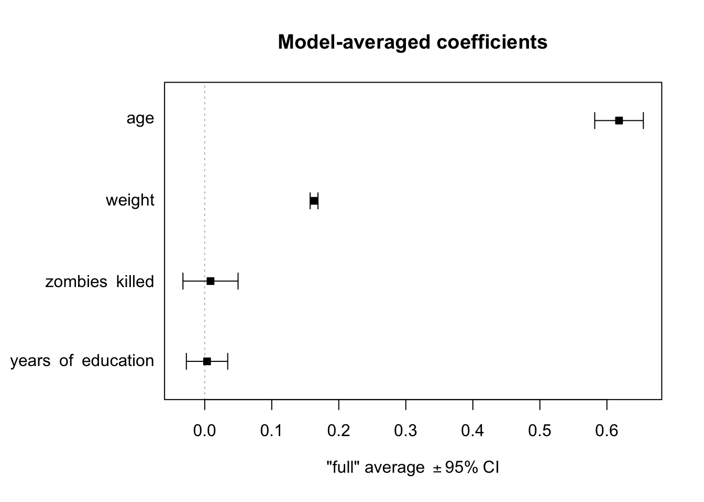
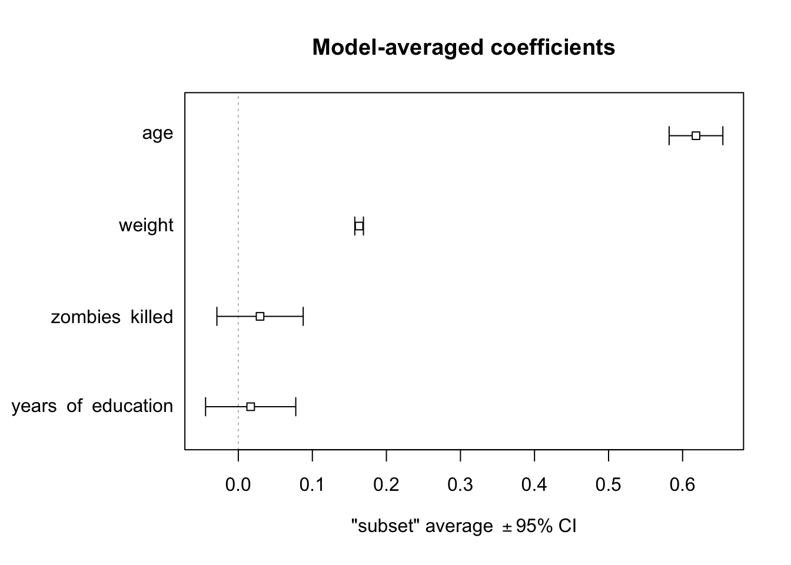

The purpose of a model selection process in a regression analysis is to sort through our explanatory variables in a systematic fashion in order to establish which are best able to describe the response. There are different possible algorithms to use for model selection, e.g., forward and backward selection, and different ways of comparing models to one another, which may result in different parameters being included in the final model. The are also several different package that we can use to combine results from several different models.
One way we can compare different models is to use F ratios and what are called partial F tests. This approach looks at two or more nested models - a larger, or more complex, model that contains explanatory variables that we are interested in and smaller, less complex, models that exclude one or more of those variables. Basically, we aim to compare the total variance in the response variable that is explained by the more complex model to that explained by a “reduced” model. If the more complex model explains a significantly greater proportion of the variation, then we conclude that predictor terms absent from the less complex model are important.
For example, if including an additional term with its associated \(\beta\) coefficient results in significantly better fit to the observed data than we find for a model that lacks that particular terms, then this is evidence against the null hypothesis that the \(\beta\) coefficient (slope) for that term equals zero.
EXAMPLE:
Let’s go back to our zombie apocalypse survivors dataset and compare a few models. We need to calculate the following partial F statistic for a full versus reduced model:
The \(R^2\) values are the coefficients of determination of the full model and the nested “reduced” model
\(n\) is the number of observations in the data set
\(p\) is the number of predictor terms in the nested (reduced) model
\(q\) is the number of predictor terms in the full model
After we calculate this F statistic, we compare it to an \(F\) distribution with “df1 = q-p” and “df2 = n-q” to derive a p value. The lm() function will do this for us automatically, but we can also do it by hand.
f <-"https://raw.githubusercontent.com/difiore/ada-datasets/main/zombies.csv"z <-read_csv(f, col_names =TRUE)
## Rows: 1000 Columns: 10
## ── Column specification ────────────────────────────────────────────────────────
## Delimiter: ","
## chr (4): first_name, last_name, gender, major
## dbl (6): id, height, weight, zombies_killed, years_of_education, age
##
## ℹ Use `spec()` to retrieve the full column specification for this data.
## ℹ Specify the column types or set `show_col_types = FALSE` to quiet this message.
z$gender <-factor(z$gender)m1 <-lm(data = z, height ~ age * gender) # full modelm2 <-lm(data = z, height ~ age + gender) # model without interactionm3 <-lm(data = z, height ~ age) # model with one predictorm4 <-lm(data = z, height ~1) # intercept only model
Once we have fitted the full and three nested models, we can carry out partial F tests to compare particular models using the anova() function, with the nested (reduced) and full model as arguments. The reduced model is included as the first argument and the full model is included as the second argument.
anova(m2, m1, test ="F")
## Analysis of Variance Table
##
## Model 1: height ~ age + gender
## Model 2: height ~ age * gender
## Res.Df RSS Df Sum of Sq F Pr(>F)
## 1 997 6752.7
## 2 996 6708.6 1 44.138 6.553 0.01062 *
## ---
## Signif. codes: 0 '***' 0.001 '**' 0.01 '*' 0.05 '.' 0.1 ' ' 1
# compares the reduced model without interactions (m2) to the full model with# interactions (m1)
We can also calculate the F statistic by hand and compare it to the \(F\) distribution.
## Analysis of Variance Table
##
## Model 1: height ~ age
## Model 2: height ~ age + gender
## Res.Df RSS Df Sum of Sq F Pr(>F)
## 1 998 10756.6
## 2 997 6752.7 1 4003.9 591.15 < 2.2e-16 ***
## ---
## Signif. codes: 0 '***' 0.001 '**' 0.01 '*' 0.05 '.' 0.1 ' ' 1
# compares the age only model (m3) to the age + gender model (m2)(f <- ((summary(m2)$r.squared -summary(m3)$r.squared) * (nrow(z) -2-1))/((1-summary(m2)$r.squared) * (2-1)))
In these cases, each comparison shows that the more complex model indeed results in signficantly more explantory power than the reduced model.
22.4 Forward Selection
Forward selection starts with an intercept-only model and then tests which of the predictor variables best improves the goodness-of-fit. Then the model is updated by adding that term and tests which of the remaining predictors would further and best improve the fit. The process continues until there are not any other terms that could be added to improve the fit more. The R functions add1() and update(), respectively, perform the series of tests and update your fitted regression model. Setting the “test=” argument in add1() to “F” includes the partial F statistic value and its significance. The “.~.” part of the “scope=” argument means, basically, “what is already there”, while the remainder of the “scope=” argument is the list of additional variables you might add for the fullest possible model.
m0 <-lm(data = z, height ~1)summary(m0)
##
## Call:
## lm(formula = height ~ 1, data = z)
##
## Residuals:
## Min 1Q Median 3Q Max
## -13.4806 -2.9511 -0.1279 2.7530 12.8997
##
## Coefficients:
## Estimate Std. Error t value Pr(>|t|)
## (Intercept) 67.6301 0.1363 496.2 <2e-16 ***
## ---
## Signif. codes: 0 '***' 0.001 '**' 0.01 '*' 0.05 '.' 0.1 ' ' 1
##
## Residual standard error: 4.31 on 999 degrees of freedom
add1(m0, scope = . ~ . + age + weight + zombies_killed + years_of_education, test ="F")
Looking at the output of add1(), we see that adding weight, age, or years_of_education all would add explanatory power to our model, but weight is associated with the highest new F statistic and the lowest new RSS, so we should update our model by adding it as a new predictor. We do this with the update() function, passing it the old model and a “formula=” argument of “.~.” (what is already there) “+ weight” (the new predictor).
m1 <-update(m0, formula = . ~ . + weight)summary(m1)
##
## Call:
## lm(formula = height ~ weight, data = z)
##
## Residuals:
## Min 1Q Median 3Q Max
## -7.1519 -1.5206 -0.0535 1.5167 9.4439
##
## Coefficients:
## Estimate Std. Error t value Pr(>|t|)
## (Intercept) 39.565446 0.595815 66.41 <2e-16 ***
## weight 0.195019 0.004107 47.49 <2e-16 ***
## ---
## Signif. codes: 0 '***' 0.001 '**' 0.01 '*' 0.05 '.' 0.1 ' ' 1
##
## Residual standard error: 2.389 on 998 degrees of freedom
## Multiple R-squared: 0.6932, Adjusted R-squared: 0.6929
## F-statistic: 2255 on 1 and 998 DF, p-value: < 2.2e-16
We then repeat this process until adding additional predictors no longer improves the explanatory power of the model.
add1(m1, scope = . ~ . + age + weight + zombies_killed + years_of_education, test ="F")
## Single term additions
##
## Model:
## height ~ weight
## Df Sum of Sq RSS AIC F value Pr(>F)
## <none> 5693.8 1743.38
## age 1 3012.83 2681.0 992.17 1120.4147 < 2e-16 ***
## zombies_killed 1 5.16 5688.6 1744.47 0.9052 0.34163
## years_of_education 1 16.93 5676.9 1742.40 2.9728 0.08498 .
## ---
## Signif. codes: 0 '***' 0.001 '**' 0.01 '*' 0.05 '.' 0.1 ' ' 1
m2 <-update(m1, formula = . ~ . + age)summary(m2)
##
## Call:
## lm(formula = height ~ weight + age, data = z)
##
## Residuals:
## Min 1Q Median 3Q Max
## -5.2278 -1.1782 -0.0574 1.1566 5.4117
##
## Coefficients:
## Estimate Std. Error t value Pr(>|t|)
## (Intercept) 31.763388 0.470797 67.47 <2e-16 ***
## weight 0.163107 0.002976 54.80 <2e-16 ***
## age 0.618270 0.018471 33.47 <2e-16 ***
## ---
## Signif. codes: 0 '***' 0.001 '**' 0.01 '*' 0.05 '.' 0.1 ' ' 1
##
## Residual standard error: 1.64 on 997 degrees of freedom
## Multiple R-squared: 0.8555, Adjusted R-squared: 0.8553
## F-statistic: 2952 on 2 and 997 DF, p-value: < 2.2e-16
add1(m2, scope = . ~ . + age + weight + zombies_killed + years_of_education, test ="F")
## Single term additions
##
## Model:
## height ~ weight + age
## Df Sum of Sq RSS AIC F value Pr(>F)
## <none> 2681.0 992.17
## zombies_killed 1 2.62551 2678.3 993.20 0.9764 0.3233
## years_of_education 1 0.77683 2680.2 993.89 0.2887 0.5912
After we add weight and age, no other variable improves the fit of the model significantly, so the final, best model in this case is m2.
summary(m2)
##
## Call:
## lm(formula = height ~ weight + age, data = z)
##
## Residuals:
## Min 1Q Median 3Q Max
## -5.2278 -1.1782 -0.0574 1.1566 5.4117
##
## Coefficients:
## Estimate Std. Error t value Pr(>|t|)
## (Intercept) 31.763388 0.470797 67.47 <2e-16 ***
## weight 0.163107 0.002976 54.80 <2e-16 ***
## age 0.618270 0.018471 33.47 <2e-16 ***
## ---
## Signif. codes: 0 '***' 0.001 '**' 0.01 '*' 0.05 '.' 0.1 ' ' 1
##
## Residual standard error: 1.64 on 997 degrees of freedom
## Multiple R-squared: 0.8555, Adjusted R-squared: 0.8553
## F-statistic: 2952 on 2 and 997 DF, p-value: < 2.2e-16
22.5 Backward Selection
Opposite to forward selection, backward selection starts with the fullest model you want to consider and systematically drops terms that do not contribute to the explanatory value of the model. The R functions for this process are drop1() to inspect the partial F test results and update() to update the model.
Here, removing either weight or age would result in a significant loss of explanatory power for our model, while removing either zombies_killed or years_of_education would not. The latter variable is associated with the lowest F value and lowest increase in RSS, so we update our model by removing it. We then run the drop1() function on the new, updated model and remove the next variable whose loss does not significantly reduce the explanatory power of the model. We continue doing this until removing any additional predictors results in a significantly worse model.
##
## Call:
## lm(formula = height ~ age + weight, data = z)
##
## Residuals:
## Min 1Q Median 3Q Max
## -5.2278 -1.1782 -0.0574 1.1566 5.4117
##
## Coefficients:
## Estimate Std. Error t value Pr(>|t|)
## (Intercept) 31.763388 0.470797 67.47 <2e-16 ***
## age 0.618270 0.018471 33.47 <2e-16 ***
## weight 0.163107 0.002976 54.80 <2e-16 ***
## ---
## Signif. codes: 0 '***' 0.001 '**' 0.01 '*' 0.05 '.' 0.1 ' ' 1
##
## Residual standard error: 1.64 on 997 degrees of freedom
## Multiple R-squared: 0.8555, Adjusted R-squared: 0.8553
## F-statistic: 2952 on 2 and 997 DF, p-value: < 2.2e-16
drop1(m2, test ="F")
## Single term deletions
##
## Model:
## height ~ age + weight
## Df Sum of Sq RSS AIC F value Pr(>F)
## <none> 2681.0 992.17
## age 1 3012.8 5693.8 1743.38 1120.4 < 2.2e-16 ***
## weight 1 8075.7 10756.6 2379.52 3003.2 < 2.2e-16 ***
## ---
## Signif. codes: 0 '***' 0.001 '**' 0.01 '*' 0.05 '.' 0.1 ' ' 1
At this point, all of the explanatory variables are still significant, so the final, best model in this case is also m2.
summary(m2)
##
## Call:
## lm(formula = height ~ age + weight, data = z)
##
## Residuals:
## Min 1Q Median 3Q Max
## -5.2278 -1.1782 -0.0574 1.1566 5.4117
##
## Coefficients:
## Estimate Std. Error t value Pr(>|t|)
## (Intercept) 31.763388 0.470797 67.47 <2e-16 ***
## age 0.618270 0.018471 33.47 <2e-16 ***
## weight 0.163107 0.002976 54.80 <2e-16 ***
## ---
## Signif. codes: 0 '***' 0.001 '**' 0.01 '*' 0.05 '.' 0.1 ' ' 1
##
## Residual standard error: 1.64 on 997 degrees of freedom
## Multiple R-squared: 0.8555, Adjusted R-squared: 0.8553
## F-statistic: 2952 on 2 and 997 DF, p-value: < 2.2e-16
22.6 Model Selection Using AIC
Stepwise Selection using {MASS}
There are two R functions that can act as further shortcuts for this process that use the Akaike Information Criterion (AIC) rather than partial F tests to determine relative model fit. We will talk in more detail about how we get AIC in our upcoming modules on GLM and mixed modeling as well.
The AIC is typically calculated as -2(log-likelihood) + 2K, where \(K\) is the number of model parameters (i.e., the number of \(\beta\) coefficients we estimate, which equals the number of variables in the model, plus the intercept), and the log-likelihood is a measure of model fit (the higher, the better). [Keep in mind, though, that log-likelihood is a function of sample size, and larger samples will tend to have lower log-likelihoods regardless of fit!] We will not derive log-likelihoods by hand in class, but if you want to know more about how log-likelihood values are derived, you can check out this helpful resource.
As you might guess from how AIC is defined, the model with the lowest AIC is typically designated as the best fit for the data. Note that although AIC can be used to assess the relative fit of a model to a certain data set, it really does not say anything about the absolute fit or explanatory value of the model (e.g., like the \(R^2\) value can). Keep in mind that the best fit model according to AIC, among the models you test against each other, may actually explain very little of the overall variation.
There are many functions within R that will perform stepwise model reduction automatically using AIC as a criterion. One of the most popular is called stepAIC(), which is a function in the {MASS} package. To use it, you must simply specify the most complex version of the model and choose whether you would like to assess the model using backwards or forwards (or both) methods of stepwise comparison.
Let’s try stepAIC() with our m0 from above. In the call for the function, we can ask it to run forward, backward, or both directions.
library(MASS)
##
## Attaching package: 'MASS'
## The following object is masked from 'package:dplyr':
##
## select
# start with full model...m <-lm(data = z, height ~ age + weight + zombies_killed + years_of_education)(s <-stepAIC(m, scope = . ~ ., direction ="both"))
##
## Call:
## lm(formula = height ~ weight + age, data = z)
##
## Residuals:
## Min 1Q Median 3Q Max
## -5.2278 -1.1782 -0.0574 1.1566 5.4117
##
## Coefficients:
## Estimate Std. Error t value Pr(>|t|)
## (Intercept) 31.763388 0.470797 67.47 <2e-16 ***
## weight 0.163107 0.002976 54.80 <2e-16 ***
## age 0.618270 0.018471 33.47 <2e-16 ***
## ---
## Signif. codes: 0 '***' 0.001 '**' 0.01 '*' 0.05 '.' 0.1 ' ' 1
##
## Residual standard error: 1.64 on 997 degrees of freedom
## Multiple R-squared: 0.8555, Adjusted R-squared: 0.8553
## F-statistic: 2952 on 2 and 997 DF, p-value: < 2.2e-16
detach(package:MASS)
Note that the stepAIC() function, whether we start with the full model more with a null model, has converged (using AIC, in this case) on the same best model we found above through forward and backwards selection by hand - i.e., the model with just age and weight retained as predictor variables after our process of model selection.
Finally, there’s a very helpful model selection package called {AICcmodavg}. You may have noticed the extra “c” in AICc… this is a “corrected” version of AIC that can account for small sample sizes (helpful for most of us in anthropology and biology). It is derived from AIC using the following equation (which you do not need to know!):
\[AIC_c = AIC + \frac{2K^2 + 2K}{n-K-1}\]
where \(n\) is sample size and \(K\) is the number of parameters in the model. This is, essentially, a version of AIC with greater penalties for models with more parameters. Since the values for AICc and AIC converge as sample size increases, it has been argued that AICc should be the default model testing criterion rather than AIC.
What makes this wrapper especially useful is that the table output of the function very clearly compares AIC values for different models in a way often asked for in publications. Let’s take a look using our already-defined models.
##
## Model selection based on AICc:
##
## K AICc Delta_AICc AICcWt Cum.Wt LL
## m2 4 3832.09 0.00 0.54 0.54 -1912.03
## m1 5 3833.13 1.04 0.32 0.86 -1911.54
## m0 6 3834.84 2.75 0.14 1.00 -1911.38
detach(package:AICcmodavg)
We get a few types of output that allow us to directly compare the relative fit of each model: the number of parameters (k), the AICc scores, and a number of other helpful outputs. Delta AICc (or \(\Delta_i(AIC)=AIC_i-min(AIC)\)) is simply a comparison showing how different each “least-best” model is from the best model in AICc score (i.e., the difference in their AICc scores). AICcWt shows us the “weight” of the model at each level (see here for an explanation of what this means). In this case, the best model is the first on the list and is, like in all our other model selection methods, m2.
Automated Subset Selection and Model Averaging using {MuMIn}
An alternative approach to model selection using AIC is provided by using the function dredge() in the {MuMIn} package, which explores subsets of a given global model in an automated way. With dredge(), we first run a global model that includes all of the terms we want to consider and then we run dredge() to fit subsets of that model without having to specify explicitly which submodels we want to run. The dredge() function returns a “model selection” table with models ranked in order of increasing AICc (i.e., lowest, or “best”, first).
NOTE: Here, we need to change the “na.action” argument from the default of “na.omit” to “na.fail” to prevent dredge() from trying to fit submodels with different data sets than the global model if there are missing values.
Alternatively, we could set that option globally for our R session before running the global model by using options(na.action = na.fail) and then omitting the na.action= argument from our call to lm().
We could also filter our dataset to only include rows where none of the variables of interest have missing data using, e.g., drop_na().
The command options()$na.action shows the current “na.action” option.
We then run dredge() to explore a set of submodels…
the m.lim= argument is optional and sets lower and upper limits on the number of terms to include
the beta= argument specifies whether or not and how to standardize the beta coefficients; “none” is the default
mods <-dredge(m, beta ="none", m.lim =c(0, 4))
## Fixed term is "(Intercept)"
class(mods)
## [1] "model.selection" "data.frame"
The dredge() function returns a “model.selection” object summarizing all of the models that were tested. The get.models() function can be used to return a list of these models.
Running the coef() function on the output of dredge() returns a table of coefficients from each model, where the rowname is the number of the corresponding model in the “model.selection” object.
coef(mods)
## (Intercept) age weight zombies_killed years_of_education
## 4 31.76339 0.6182699 0.1631067 NA NA
## 12 31.66186 0.6180530 0.1632323 0.02934761 NA
## 8 31.73031 0.6176839 0.1630710 NA 0.01667747
## 16 31.62571 0.6174357 0.1631967 0.02977682 0.01747568
## 7 39.37682 NA 0.1947115 NA 0.07771446
## 3 39.56545 NA 0.1950187 NA NA
## 15 39.22119 NA 0.1948748 0.04304143 0.07883279
## 11 39.41922 NA 0.1951791 0.04115847 NA
## 2 48.73566 0.9425086 NA NA NA
## 6 48.61525 0.9403588 NA NA 0.05457557
## 10 48.85642 0.9424641 NA -0.04006155 NA
## 14 48.73428 0.9403581 NA -0.03870129 0.05350017
## 5 67.11947 NA NA NA 0.17043620
## 13 67.23863 NA NA -0.03874818 0.16935942
## 1 67.63010 NA NA NA NA
## 9 67.75898 NA NA -0.04307553 NA
22.6.1 Averaging Coefficients across Sets of Models
The code below averages beta coefficients for the set of models with Delta AICc < 4. Here, we also need to set the argument fit=TRUE because dredge() does not actually store the model results. The model.avg() function returns a “summary.averaging” object.
(mods.avg <-summary(model.avg(mods, subset = delta <4, fit =TRUE)))
NOTE: The ‘subset’ (or ‘conditional’) average reported is only averaging over models where the term appears. The ‘full’ average reported assumes that a term is included in every model, but the estimate and standard error are set to zero in models where the term is not included.
The code below averages beta coefficients for models in the 95% confidence set, i.e., for cumulative AIC weights up to 95%:
(mods.avg <-summary(model.avg(mods, subset =cumsum(weight) <=0.95, fit =TRUE)))
With the {MuMIn} package loaded, we can use the plot() function to make a plot of averaged model coefficients, similar to plot_summs() from {jtools}.
plot(mods.avg, full =TRUE, intercept =FALSE)

plot(mods.avg, full =FALSE, intercept =FALSE)

NOTE: Omitting the intercept= argument or setting it to TRUE will include the \(\beta0\) coefficient. When full=TRUE, coefficient averaging is done over all models in the selected set (for models where a particular parameter does not appear, the corresponding coefficient and its variance are set to zero). When full=FALSE, coefficient averaging is done only over models in the selected set where the parameter appears.
Note that, here again, the two key predictors of zombie apocalypse survivor’s height are age and weight, and the best models include both of these terms!
Concept Review
Model selection is an iterative process, done as part of a regression analysis, where we sort through our explanatory variables and alternative models involving those variables to discern which are best able to account for variation in the response variable
There are various criteria for evaluating alternative models, but all rely on comparing the “explanatory value” of more complex models versus less complex models
Forward selection evaluates whether adding a variable or interaction among variables to a less complex model increases the explanatory value of the model significantly
Backwards selection evaluates whether removing a variable or interaction among variables from a more complex model results in a significant loss of explanatory power
Source Code
# Model Selection in Regression {#module-22}## OverviewThe purpose of a model selection process in a regression analysis is to sort through our explanatory variables in a systematic fashion in order to establish which are best able to describe the response. There are different possible algorithms to use for model selection, e.g., forward and backward selection, and different ways of comparing models to one another, which may result in different parameters being included in the final model. The are also several different package that we can use to combine results from several different models.## Preliminaries- Install these packages in ***R***: [{MASS}](https://cran.r-project.org/web/packages/MASS/MASS.pdf), [{AICcmodavg}](https://cran.r-project.org/web/packages/AICcmodavg/AICcmodavg.pdf), and [{MuMIn}](https://cran.r-project.org/web/packages/MuMIn/MuMIn.pdf)- Load {tidyverse}```{r}#| include: falselibrary(tidyverse)```## Nested Comparisons and F TestsOne way we can compare different models is to use F ratios and what are called **partial F tests**. This approach looks at two or more *nested* models - a larger, or more complex, model that contains explanatory variables that we are interested in and smaller, less complex, models that exclude one or more of those variables. Basically, we aim to compare the total variance in the response variable that is explained by the more complex model to that explained by a "reduced" model. If the more complex model explains a significantly greater proportion of the variation, then we conclude that predictor terms absent from the less complex model are important.For example, if including an additional term with its associated $\beta$ coefficient results in significantly better fit to the observed data than we find for a model that lacks that particular terms, then this is evidence against the null hypothesis that the $\beta$ coefficient (slope) for that term equals zero.### EXAMPLE: {.unnumbered}Let's go back to our zombie apocalypse survivors dataset and compare a few models. We need to calculate the following partial F statistic for a full versus reduced model:$$F = \frac{(R^2_{full}-R^2_{reduced})(n-q-1)}{(1-R^2_{full})(q-p)}$$where:- The $R^2$ values are the coefficients of determination of the full model and the nested "reduced" model- $n$ is the number of observations in the data set- $p$ is the number of predictor terms in the nested (reduced) model- $q$ is the number of predictor terms in the full modelAfter we calculate this F statistic, we compare it to an $F$ distribution with "df1 = q-p" and "df2 = n-q" to derive a p value. The `lm()` function will do this for us automatically, but we can also do it by hand.```{r}f <-"https://raw.githubusercontent.com/difiore/ada-datasets/main/zombies.csv"z <-read_csv(f, col_names =TRUE)z$gender <-factor(z$gender)m1 <-lm(data = z, height ~ age * gender) # full modelm2 <-lm(data = z, height ~ age + gender) # model without interactionm3 <-lm(data = z, height ~ age) # model with one predictorm4 <-lm(data = z, height ~1) # intercept only model```Once we have fitted the full and three nested models, we can carry out partial F tests to compare particular models using the `anova()` function, with the nested (reduced) and full model as arguments. The reduced model is included as the first argument and the full model is included as the second argument.```{r}anova(m2, m1, test ="F")# compares the reduced model without interactions (m2) to the full model with interactions (m1)```We can also calculate the F statistic by hand and compare it to the $F$ distribution.```{r}(f <- ((summary(m1)$r.squared -summary(m2)$r.squared) * (nrow(z) -3-1)) / ((1-summary(m1)$r.squared) * (3-2)))(p <-1-pf(f, df1 =3-2, df2 =nrow(z) -3, lower.tail =TRUE))# df1 = q-p, df2 = n-qanova(m3, m2, test ="F")# compares the age only model (m3) to the age + gender model (m2)(f <- ((summary(m2)$r.squared -summary(m3)$r.squared) * (nrow(z) -2-1)) / ((1-summary(m2)$r.squared) * (2-1)))(p <-1-pf(f, df1 =2-1, df2 =nrow(z) -2, lower.tail =TRUE))# df1 = q-p, df2 = n-q```In these cases, each comparison shows that the more complex model indeed results in signficantly more explantory power than the reduced model.## Forward SelectionForward selection starts with an intercept-only model and then tests which of the predictor variables best improves the goodness-of-fit. Then the model is updated by adding that term and tests which of the remaining predictors would further and best improve the fit. The process continues until there are not any other terms that could be added to improve the fit more. The ***R*** functions `add1()` and `update()`, respectively, perform the series of tests and update your fitted regression model. Setting the "test=" argument in `add1()` to "F" includes the partial F statistic value and its significance. The ".~." part of the "scope=" argument means, basically, "what is already there", while the remainder of the "scope=" argument is the list of additional variables you might add for the fullest possible model.```{r}m0 <-lm(data = z, height ~1)summary(m0)add1(m0, scope = .~. + age + weight + zombies_killed + years_of_education, test ="F")```Looking at the output of `add1()`, we see that adding **weight**, **age**, or **years_of_education** all would add explanatory power to our model, but **weight** is associated with the highest new F statistic and the lowest new RSS, so we should update our model by adding it as a new predictor. We do this with the `update()` function, passing it the old model and a "formula=" argument of ".~." (what is already there) "+ weight" (the new predictor).```{r}m1 <-update(m0, formula = .~. + weight)summary(m1)```We then repeat this process until adding additional predictors no longer improves the explanatory power of the model.```{r}add1(m1, scope = .~. + age + weight + zombies_killed + years_of_education, test ="F")m2 <-update(m1, formula = .~. + age)summary(m2)add1(m2, scope = .~. + age + weight + zombies_killed + years_of_education, test ="F")```After we add **weight** and **age**, no other variable improves the fit of the model significantly, so the final, best model in this case is **m2**.```{r}summary(m2)```## Backward SelectionOpposite to forward selection, backward selection starts with the fullest model you want to consider and systematically drops terms that do not contribute to the explanatory value of the model. The ***R*** functions for this process are `drop1()` to inspect the partial F test results and `update()` to update the model.```{r}m0 <-lm(data = z, height ~ age + weight + zombies_killed + years_of_education)summary(m0)drop1(m0, test ="F")```Here, removing either **weight** or **age** would result in a significant loss of explanatory power for our model, while removing either **zombies_killed** or **years_of_education** would not. The latter variable is associated with the lowest F value and lowest increase in RSS, so we update our model by removing it. We then run the `drop1()` function on the new, updated model and remove the next variable whose loss does not significantly reduce the explanatory power of the model. We continue doing this until removing any additional predictors results in a significantly worse model.```{r}m1 <-update(m0, .~. - years_of_education)summary(m1)drop1(m1, test ="F")m2 <-update(m1, .~. - zombies_killed)summary(m2)drop1(m2, test ="F")```At this point, all of the explanatory variables are still significant, so the final, best model in this case is also **m2**.```{r}summary(m2)```## Model Selection Using AIC#### Stepwise Selection using {MASS} {.unnumbered}There are two ***R*** functions that can act as further shortcuts for this process that use the [Akaike Information Criterion (AIC)](https://en.wikipedia.org/wiki/Akaike_information_criterion) rather than partial F tests to determine relative model fit. We will talk in more detail about how we get AIC in our upcoming modules on GLM and mixed modeling as well.The AIC is typically calculated as ***-2(log-likelihood) + 2K***, where $K$ is the number of model parameters (i.e., the number of $\beta$ coefficients we estimate, which equals the number of variables in the model, plus the intercept), and the log-likelihood is a measure of model fit (the higher, the better). [Keep in mind, though, that log-likelihood is a function of sample size, and larger samples will tend to have lower log-likelihoods regardless of fit!] We will not derive log-likelihoods by hand in class, but if you want to know more about how log-likelihood values are derived, you can check out [this helpful resource](https://newonlinecourses.science.psu.edu/stat504/node/27/).As you might guess from how AIC is defined, the model with the **lowest** AIC is typically designated as the best fit for the data. Note that although AIC can be used to assess the relative fit of a model to a certain data set, it really does not say anything about the absolute fit or explanatory value of the model (e.g., like the $R^2$ value can). Keep in mind that the best fit model according to AIC, among the models you test against each other, may actually explain very little of the overall variation.There are many functions within **R** that will perform stepwise model reduction automatically using AIC as a criterion. One of the most popular is called `stepAIC()`, which is a function in the {MASS} package. To use it, you must simply specify the most complex version of the model and choose whether you would like to assess the model using backwards or forwards (or both) methods of stepwise comparison.Let's try `stepAIC()` with our **m0** from above. In the call for the function, we can ask it to run forward, backward, or both directions.```{r}library(MASS)# start with full model...m <-lm(data = z, height ~ age + weight + zombies_killed + years_of_education)(s <-stepAIC(m, scope = . ~ ., direction ="both"))summary(s)# ... or start with minimal modelm <-lm(data = z, height ~1)(s <-stepAIC(m, scope =~ . + age + weight + zombies_killed + years_of_education, direction ="both"))summary(s)detach(package:MASS)```Note that the `stepAIC()` function, whether we start with the full model more with a null model, has converged (using AIC, in this case) on the same best model we found above through forward and backwards selection by hand - i.e., the model with just **age** and **weight** retained as predictor variables after our process of model selection.Finally, there's a very helpful model selection package called {AICcmodavg}. You may have noticed the extra "c" in AICc... this is a "corrected" version of AIC that can account for small sample sizes (helpful for most of us in anthropology and biology). It is derived from AIC using the following equation (which you do not need to know!):$$AIC_c = AIC + \frac{2K^2 + 2K}{n-K-1}$$where $n$ is sample size and $K$ is the number of parameters in the model. This is, essentially, a version of AIC with greater penalties for models with more parameters. Since the values for AICc and AIC converge as sample size increases, it has been argued that AICc should be the default model testing criterion rather than AIC.What makes this wrapper especially useful is that the table output of the function very clearly compares AIC values for different models in a way often asked for in publications. Let's take a look using our already-defined models.```{r}library(AICcmodavg)aictab(list(m0, m1, m2), c("m0", "m1", "m2"))detach(package:AICcmodavg)```We get a few types of output that allow us to directly compare the relative fit of each model: the number of parameters (**k**), the **AICc** scores, and a number of other helpful outputs. **Delta AICc** (or $\Delta_i(AIC)=AIC_i-min(AIC)$) is simply a comparison showing how different each "least-best" model is from the best model in AICc score (i.e., the difference in their AICc scores). **AICcWt** shows us the "weight" of the model at each level (see [here](https://www.rdocumentation.org/packages/qpcR/versions/1.4-0/topics/akaike.weights) for an explanation of what this means). In this case, the best model is the first on the list and is, like in all our other model selection methods, **m2**.#### Automated Subset Selection and Model Averaging using {MuMIn} {.unnumbered}An alternative approach to model selection using AIC is provided by using the function `dredge()` in the {MuMIn} package, which explores subsets of a given global model in an automated way. With `dredge()`, we first run a global model that includes all of the terms we want to consider and then we run `dredge()` to fit subsets of that model without having to specify explicitly which submodels we want to run. The `dredge()` function returns a "model selection" table with models ranked in order of increasing AICc (i.e., lowest, or "best", first).We start by defining a "global.model"...```{r}library(MuMIn)m <-lm(data = z, height ~ age + weight + zombies_killed + years_of_education,na.action ="na.fail")```> **NOTE:** Here, we need to change the "na.action" argument from the default of "na.omit" to "na.fail" to prevent `dredge()` from trying to fit submodels with different data sets than the global model if there are missing values.> Alternatively, we could set that option globally for our R session before running the global model by using `options(na.action = na.fail)` and then omitting the `na.action=` argument from our call to `lm()`.> We could also filter our dataset to only include rows where none of the variables of interest have missing data using, e.g., `drop_na()`.> The command `options()$na.action` shows the current "na.action" option.We then run `dredge()` to explore a set of submodels... - the `m.lim=` argument is optional and sets lower and upper limits on the number of terms to include - the `beta=` argument specifies whether or not and how to standardize the beta coefficients; "none" is the default```{r}mods <-dredge(m, beta ="none", m.lim =c(0, 4))class(mods)```The `dredge()` function returns a "model.selection" object summarizing all of the models that were tested. The `get.models()` function can be used to return a list of these models.```{r}(mods.list <-get.models(mods, subset=TRUE))```Running the `coef()` function on the output of `dredge()` returns a table of coefficients from each model, where the rowname is the number of the corresponding model in the "model.selection" object.```{r}coef(mods)```### Averaging Coefficients across Sets of ModelsThe code below averages beta coefficients for the set of models with **Delta AICc** < 4. Here, we also need to set the argument `fit=TRUE` because `dredge()` does not actually store the model results. The `model.avg()` function returns a "summary.averaging" object.```{r}(mods.avg <-summary(model.avg(mods,subset = delta <4, fit =TRUE)))class(mods.avg)```We can use the `confint()` function to confidence intervals for the averaged coefficient estimates across models...```{r}confint(mods.avg)```> NOTE: The ‘subset’ (or ‘conditional’) average reported is only averaging over models where the term appears. The ‘full’ average reported assumes that a term is included in every model, but the estimate and standard error are set to zero in models where the term is not included.The code below averages beta coefficients for models in the 95% confidence set, i.e., for cumulative AIC weights up to 95%:```{r}(mods.avg <-summary(model.avg(mods, subset =cumsum(weight) <=0.95, fit =TRUE)))confint(mods.avg)```With the {MuMIn} package loaded, we can use the `plot()` function to make a plot of averaged model coefficients, similar to `plot_summs()` from {jtools}.```{r}plot(mods.avg, full =TRUE, intercept =FALSE)plot(mods.avg, full =FALSE, intercept =FALSE)```> NOTE: Omitting the `intercept=` argument or setting it to `TRUE` will include the $\beta0$ coefficient. When `full=TRUE`, coefficient averaging is done over all models in the selected set (for models where a particular parameter does not appear, the corresponding coefficient and its variance are set to zero). When `full=FALSE`, coefficient averaging is done only over models in the selected set where the parameter appears.Note that, here again, the two key predictors of zombie apocalypse survivor's **height** are **age** and **weight**, and the best models include both of these terms!```{r}#| include: falsedetach(package:MuMIn)detach(package:tidyverse)```---## Concept Review {.unnumbered}- Model selection is an iterative process, done as part of a regression analysis, where we sort through our explanatory variables and alternative models involving those variables to discern which are best able to account for variation in the response variable- There are various criteria for evaluating alternative models, but all rely on comparing the "explanatory value" of more complex models versus less complex models- Forward selection evaluates whether adding a variable or interaction among variables to a less complex model increases the explanatory value of the model significantly- Backwards selection evaluates whether removing a variable or interaction among variables from a more complex model results in a significant loss of explanatory power